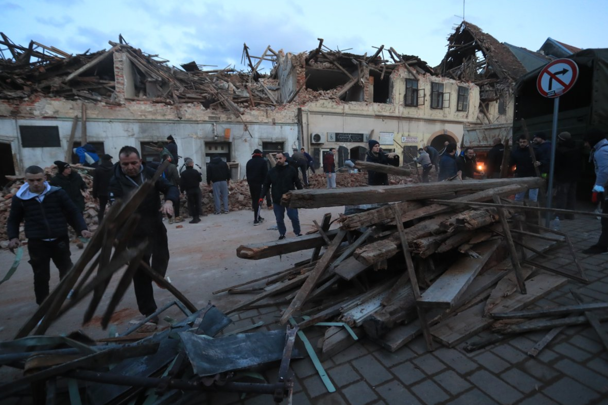
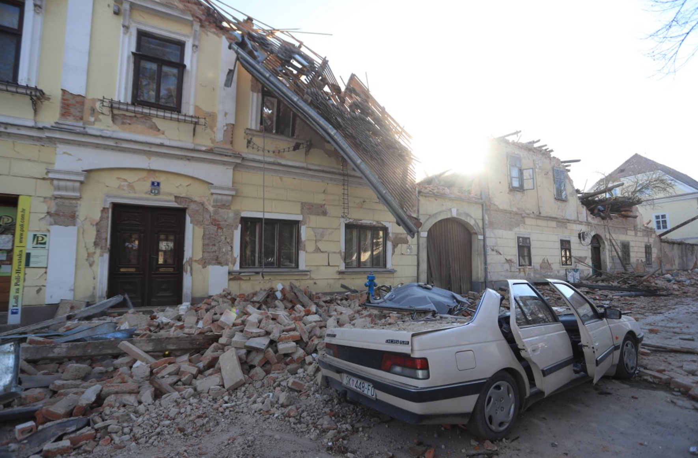

NOVICE

Potres razdejal Petrinjo in okolico
Območje Petrinje je po ponedeljkovem potresu z magnitudo 5 streslo več popotresnih sunkov. Dan kasneje pa je nov, večji sunek močno poškodoval središče mesta. Po podatkih hrvaške seizmološke službe je bila magnituda potresa 6,2. Hrvaški mediji poročajo o najmanj sedmih smrtnih žrtvah. Reševalni psi med ruševinami še iščejo preživele. Tla se na Hrvaškem še vedno tresejo, malo pred 19. uro je okolico Siska stresel potres z magnitudo 3,9.
Po podatkih ESMC je bilo žarišče potresa 44 kilometrov jugovzhodno od Zagreba in 12 kilometrov zahodno od Siska. Potres je trajal okoli 20 sekund, čutilo ga je okoli šest milijonov ljudi.
"To je strašno. Imamo mrtve in ranjene. Videli smo otroka, ki je umrl na ulici. Središče mesta je uničeno. Sedem naših inženirjev je bilo zasutih v stavbi, vendar smo jih uspeli rešiti. To je katastrofa, pošljite vso pomoč, ki jo lahko zagotovite. Pošljite mehanizacijo, ulice so blokirane," je po potresu povedal župan Petrinje Darinko Dumbović. V Petrinji je umrla deklica, ki je pred petimi dnevi dopolnila 13 let. Njenim staršem, ki so v hudem šoku, so na kraju dogodka nudili pomoč.

Največ mrtvih je iz vasi Majska Poljana nedaleč Gline. V treh v celoti porušenih hišah so reševalci našli pet mrtvih ljudi. Med njimi 20-letnika, je potrdila podžupanja Gline Branka Bakšić Mitić za novičarski portal index.hr. Portal je dodal, da je ena oseba huje poškodovana in se bori za življenje. Še dve osebi iščejo v ruševinah. Med umrlimi sta tudi oče in sin.
Bakšić Mitićeva je za regionalno televizijo N1 povedala, da je v Majski Poljani potres prestalo približno deset odstotkov hiš. Zaprosila je za stanovanjske zabojnike, odeje, grelnike, hrano in vodo. Kot je dejala, so prebivalcem ponudili namestitve v apartmajih na morju, a zaenkrat ne želijo zapustiti svojega kraja bivanja.
Za čiščenje ruševin so pripeljali številne stroje. Pričakujejo, da bodo reševalci angažirani celo noč. Za prebivalce, ki so ostali brez strehe nad glavo, so organizirali začasne namestitve v skladu s protikoronskimi ukrepi. Med drugim na športnem igrišču v Glini postavljajo šotore civilne zaščite.

Sedma žrtev pa prihaja iz kraja Žažina blizu Siska, kjer so več ur iskali pogrešanega moškega v porušeni cerkvi. V potresu se je zrušil strop, v cerkvi pa so bile v tistem času štiri osebe. Tri so uspešno rešili, nato pa je stekla akcija za pogrešanim moškim. Malo pred 20. uro so ga našli mrtvega.
Po poročanju N1 reševalni psi med ruševinami še vedno iščejo preživele. V središču Petrinje so pod ruševinami našli dve osebi, ki sta potres preživeli. Gre za žensko in enega otroka. V središču mesta se je stanovanjska hiša zrušila na avto. "Iz avtomobila smo uspeli rešiti otroka. Lastnik še vedno notri, vendar se ne oglaša," je za N1 povedal občan. "Težko, slišal sem, da se je porušil tudi vrtec, k sreči pa otrok tam ni bilo. Ne vemo, ali je kaj mrtvih," je povedal drugi. Kot poročajo hrvaški mediji je središče mesta porušeno.

Hrvaška televizija poroča, da središče Petrinje, kot so ga poznali, ne obstaja več. "Ljudje ležijo v parku, skakali so s streh, ki so jih ravno popravljali. Iz uničenega avtomobila so gasilci rešili otroka in moškega," navaja HTV.
"Polovica mesta je izginila. Je kot v Hirošimi," je dejal pretreseni župan Dumbović. 20 poškodovanih prebivalcev Petrinje so odpeljali v bolnišnico v Sisku. Dve osebi sta težje poškodovani.
Župan je o trenutnih razmerah v kraju spregovoril tudi za 24UR. "V našem mestu je bil danes pekel. Vse, kar lahko rečem v tem trenutku, je, da sočustvujemo z žrtvami, z družinami umrlih, ki so ostali brez svojcev. Vem, da v tem trenutku ni pravih besed, s katerimi bi izrazili sočutje in svojo žalost,", je dejal.